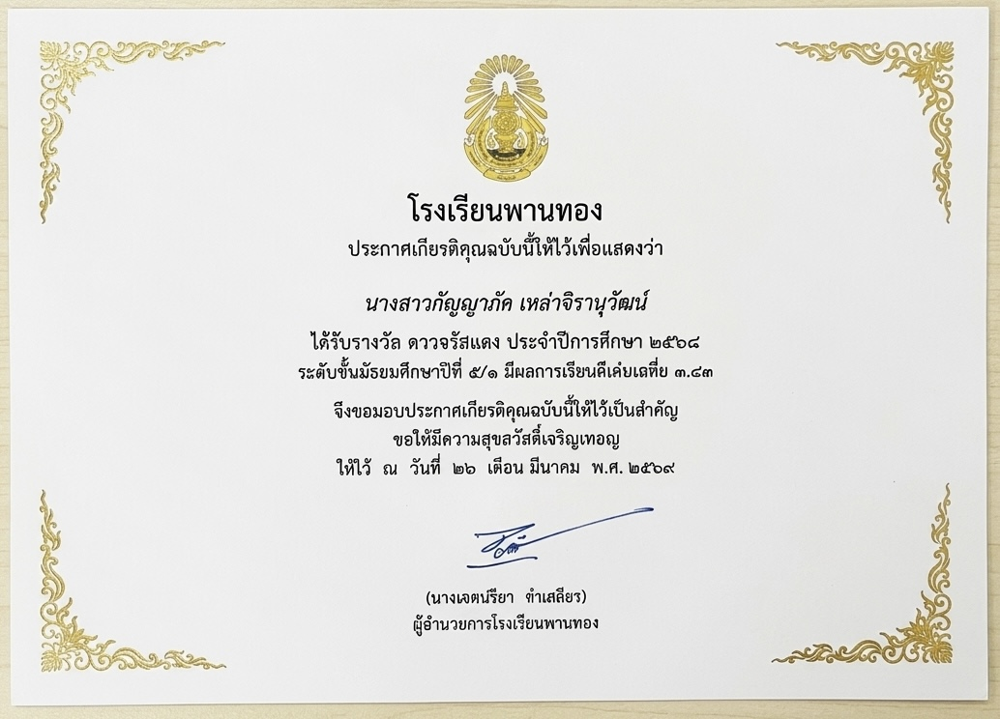
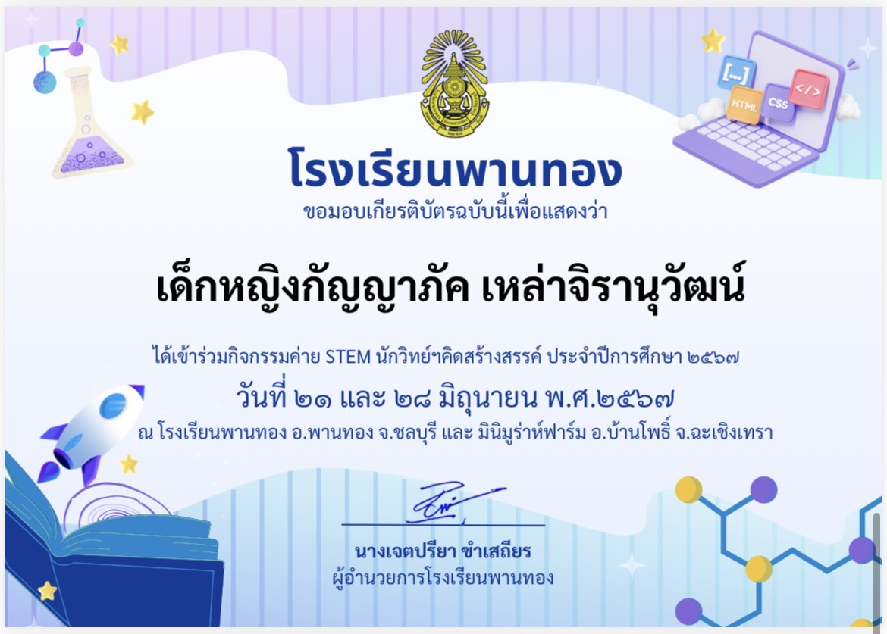
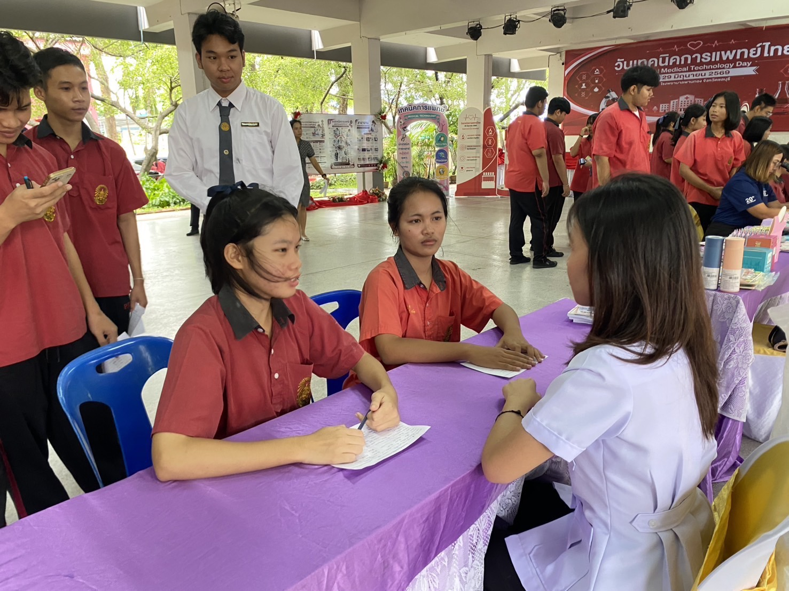
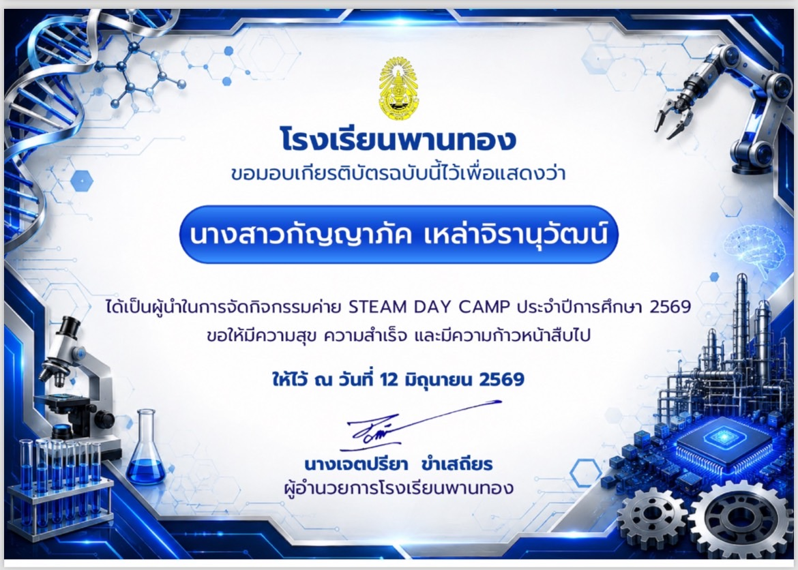

เกียรติบัตรฉบับนี้ออกโดยโรงเรียนพานทอง เพื่อประกาศเกียรติคุณให้แก่ นางสาวกัญญาภัค เหล่าจิรานุวัฒน์ นักเรียนระดับชั้นมัธยมศึกษาปีที่ 5/1 เนื่องจากได้รับ "รางวัล ดาวจรัสแสง" ประจำปีการศึกษา 2568 โดยมีผลการเรียนดีเด่นเฉลี่ย 3.83

เกียรติบัตรฉบับนี้ออกโดยโรงเรียนพานทอง มอบให้แก่ เด็กหญิงกัญญาภัค เหล่าจิรานุวัฒน์ เพื่อแสดงว่าได้เข้าร่วม "กิจกรรมค่าย STEM นักวิทย์ฯคิดสร้างสรรค์" ประจำปีการศึกษา 2567 กิจกรรมนี้จัดขึ้นเมื่อวันที่ 21 และ 28 มิถุนายน พ.ศ. 2567 ณ โรงเรียนพานทอง จ.ชลบุรี และ มินิมูร่าห์ฟาร์ม จ.ฉะเชิงเทรา

ได้มีโอกาสเข้าร่วมและสนับสนุนกิจกรรม "วันเทคนิคการแพทย์ไทย" ซึ่งเป็นความร่วมมือระหว่างโรงเรียนพานทองและโรงพยาบาลพานทอง ในการจัดโครงการส่งเสริมสุขภาพเชิงรุกและให้บริการตรวจคัดกรองโรคต่าง ๆ ให้แก่คณะครู บุคลากรทางการศึกษา นักเรียน และประชาชนในชุมชน ซึ่งกิจกรรมนี้ทำให้หนูได้เรียนรู้ถึงความสำคัญของการเสียสละเพื่อส่วนรวม และสร้างความตระหนักในเรื่องการดูแลสุขภาพเพื่อคุณภาพชีวิตที่ดีอย่างยั่งยืนค่ะ

เกียรติบัตรฉบับนี้ออกโดยโรงเรียนพานทอง มอบให้แก่ นางสาวกัญญาภัค เหล่าจิรานุวัฒน์ เพื่อแสดงว่าเป็น "ผู้นำในการจัดกิจกรรมค่าย STEAM DAY CAMP" ประจำปีการศึกษา 2569